In the industrialized countries of the global North, especially in Europe and the United States, there are a number of factors that cause a care deficit:
Demographic aging: more people in need of care in old age, but less young people to take care of them.
in recent decades, more and more women have taken up paid employment, providing a way out of the domestic sphere.
Welfare states provide no answers: cuts to public services are the end result of a gradual dismantling of a so-called “Welfare State” that, while never providing for the entire population, did alleviate some socio-economic inequalities.
Family-first social model: structuring of domestic and private spheres around the nuclear family, with an increasing tendency towards atomization and individualism.
Lack of co-responsibility: housekeeping and care tasks are not distributed equally, and instead through the sexual division of labour fall to women.

At the same time, the wealth of the global North and the capitalist system relies on an extractivist economy. A developmental model has been put in place in the countries of the Global South, for example in Latin America. This development is based on the extraction of the common wealth –resources and raw materials– from Latin American lands.
Extractivism and development are two sides of the same coin, resulting in enrichment of the industrialized countries of the North and impoverishment of the non-industrialized countries of the global South. The system is sustained by a whole host of racist, sexist, ableist, ageist and colonial structures, which act as pillars of globalized capitalism.
The capitalist development model allows thousands of multinational corporations to carry out extractivist macro-projects that ransack the common wealth of rural areas each year. Water, minerals, fossil fuels, monocultures and foodstuffs are, among others, the natural resources that are extracted wholesale.

This causes great damage to the natural environment and to people: pollution, destabilization of the land, floods, desertification, deforestation, drought, and more. At the same time, it disrupts the balances of local economies and activities, to the point of hampering communities' supply chains and self-sufficiency. In rural areas, this results in a lack of opportunities for the local populace and, more specifically, obliges women's entry into the labour market. Finding no alternatives in their local areas, they are forced to migrate from rural to urban environments. In turn, upon their leaving, care deficits arise.Other women –family members and close friends, or paid workers– have to take on the care that the women who migrate can no longer provide, be it caring for children, the elderly or the sick, or the land, the community and the natural environment.
This is the background to national and transnational transfers of care. As a result of a capitalist socio-economic model which is neither environmentally sustainable nor responsible, the countries of the Global South have seen high migratory mobility. In the first place, from rural to urban areas. Population growth in cities generates socio-economic stress, as the volume of people displaced from the countryside to the city often cannot be sustained.
A lack of opportunities in terms of one's work and/or livelihood paves the way for a cheap and casualized workforce. Workplace conditions and rights are on many occasions cut back, with populations of urban origin also feeling the impact of the demographic change resulting from this migration. In this context, with a lack of opportunities in the countryside and in the city, people with more economic resources but without economic stability consider migration as a way out of the vicious cycle. Over the last thirty years, the phenomenon of global migration from South to North has become increasingly feminized. In the last decade, almost half of migrants have been women. They migrate transnationally, to neighbouring countries or to other continents, to find better working conditions and to help support the livelihoods of their own households.
In most cases, when women migrate, they leave behind relatives in their country of origin who they previously cared for: children, parents, sick people, and others with whom they are unable or unwilling to reunite. When women migrate abroad, a further and particularly urban care deficit arises. Again, other women take on care duties, whether paid or unpaid. Should the caregiver in the country of origin be a paid employee, this will probably be on a casual basis, perpetuating
a series of human rights infringements that begins in the countries of the global North and reaches the most remote corners of the countries of the global South.

 




